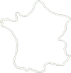

{{"le saviez-vous ?" | upcase }}
Chaque site internet, chaque page, chaque clic, a un impact sur l’environnement, cela s’appelle la
{{"pollution numérique" | upcase }}
Aller sur internet demande une production d'électricité importante. Aujourd’hui, l’empreinte carbone du numérique dépasse celle du voyage aérien.

Le numérique mondial représente un 7ème continent de la taille de 2 à 3 fois celle de la France. *